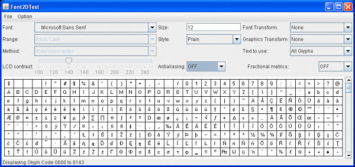

This section describes possible issues and crashes that are related to text rendering and describes tips to overcome these issues in the following subsections:
If an application crashes during text rendering, first check the fatal error log file. See Appendix A for detailed information about this error log file. If the crash occurred in fontmanager.dll or if fontmanager is present in the stack, then the crash occurred in the font processing code. Example 12-1 shows typical native stack frames (excerpt from the full log file).
Example 12-1 Native Stack Frames from the Log File
Stack: [0x008a0000,0x008f0000), sp=0x008ef52c, free space=317k Native frames: (J=compiled Java code, j=interpreted, Vv=VM code, C=native code) C [ntdll.dll+0x1888f] C [ntdll.dll+0x18238] C [ntdll.dll+0x11c76] C [MSVCR71.dll+0x16b3] C [MSVCR71.dll+0x16db] C [fontmanager.dll+0x21f9a] C [fontmanager.dll+0x22876] C [fontmanager.dll+0x1de40] C [fontmanager.dll+0x1da94] C [fontmanager.dll+0x48abb] j sun.font.FileFont.getGlyphImage(JI)J+0 j sun.font.FileFontStrike.getGlyphImagePtrs([I[JI)V+92 j sun.font.GlyphList.mapChars(Lsun/java2d/loops/FontInfo;I)Z+37 j sun.font.GlyphList.setFromString(Lsun/java2d/loops/FontInfo;Ljava/lang/String;FF)Z+71 j sun.java2d.pipe.GlyphListPipe.drawString(Lsun/java2d/SunGraphics2D;Ljava/lang/String;DD)V+148 j sun.java2d.SunGraphics2D.drawString(Ljava/lang/String;II)V+60 j FontCrasher.tryFont(Ljava/lang/String;)V+138 j FontCrasher.main([Ljava/lang/String;)V+20 v ~StubRoutines::call_stub
In this case, a particular font is probably the problem. If so, then removing this font from the system will likely resolve the problem.
To identify the font file, execute the application with -Dsun.java2d.debugfonts=true. The font that is mentioned last is usually the one that is causing problems as shown in Example 12-2.
Example 12-2 Log File to Identify the Font File
INFO: Registered file C:\WINDOWS\Fonts\WINGDING.TTF as font ** TrueType Font: Family=Wingdings Name=Wingdings style=0 fileName=C:\WINDOWS\Fonts\WINGDING.TTF rank=2 Aug 16, 2006 10:59:06 PM sun.font.FontManager initialiseDeferredFont INFO: Opening deferred font file SYMBOL.TTF Aug 16, 2006 10:59:06 PM sun.font.FontManager addToFontList INFO: Add to Family Symbol, Font Symbol rank=2 Aug 16, 2006 10:59:06 PM sun.font.FontManager registerFontFile INFO: Registered file C:\WINDOWS\Fonts\SYMBOL.TTF as font ** TrueType Font: Family=Symbol Name=Symbol style=0 fileName=C:\WINDOWS\Fonts\SYMBOL.TTF rank=2 Aug 16, 2006 10:59:06 PM sun.font.FontManager findFont2D INFO: Search for font: Dialog Aug 16, 2006 10:59:06 PM sun.font.FontManager initialiseDeferredFont INFO: Opening deferred font file ARIALBD.TTF Aug 16, 2006 10:59:06 PM sun.font.FontManager addToFontList INFO: Add to Family Arial, Font Arial Bold rank=2 Aug 16, 2006 10:59:06 PM sun.font.FontManager registerFontFile INFO: Registered file C:\WINDOWS\Fonts\ARIALBD.TTF as font ** TrueType Font: Family=Arial Name=Arial Bold style=1 fileName=C:\WINDOWS\Fonts\ARIALBD.TTF rank=2 Aug 16, 2006 10:59:06 PM sun.font.FontManager initialiseDeferredFont INFO: Opening deferred font file WINGDING.TTF Aug 16, 2006 10:59:06 PM sun.font.FontManager initialiseDeferredFont INFO: Opening deferred font file SYMBOL.TTF Aug 16, 2006 10:59:06 PM sun.font.FontManager findFont2D INFO: Search for font: Dialog Aug 16, 2006 10:59:06 PM sun.font.FontManager initialiseDeferredFont INFO: Opening deferred font file ARIAL.TTF Aug 16, 2006 10:59:06 PM sun.font.FontManager addToFontList INFO: Add to Family Arial, Font Arial rank=2 Aug 16, 2006 10:59:06 PM sun.font.FontManager registerFontFile INFO: Registered file C:\WINDOWS\Fonts\ARIAL.TTF as font ** TrueType Font: Family=Arial Name=Arial style=0 fileName=C:\WINDOWS\Fonts\ARIAL.TTF rank=2 Aug 16, 2006 10:59:06 PM sun.font.FontManager initialiseDeferredFont INFO: Opening deferred font file WINGDING.TTF Aug 16, 2006 10:59:06 PM sun.font.FontManager initialiseDeferredFont INFO: Opening deferred font file SYMBOL.TTF
|
Note: In some cases the font that is last mentioned might be in fact innocent. Font names are printed when they are first used and subsequent uses are not shown. |
To verify that this particular font is causing the problem, you can temporarily remove it from your system. You can easily find the file name associated with this particular family name from the above output.
Another verification approach is to use the Font2DTest tool (demo/jfc/Font2DTest) to test fonts that you suspect. You can specify a particular font size, style, and rasterization mode. If the process of viewing a particular font with Font2DTest causes the JDK to crash, then it is very likely that it is the font that is causing the problems.
If you found a font causing the JDK to crash, it is very important to report this problem, including the particular font and the operating system in the Bugs Database. See Submit a Bug Report for more information about reporting bugs.
Java has its own font rasterizer, and you can expect some small differences between the appearance of text in a Java application and in a native application.
One of the most typical sources of these differences is that the antialiasing settings can be different. In particular, a Swing application sometimes ignores the Linux desktop font antialiasing settings.
There are several likely reasons for this behavior:
Over remote X11 antialiasing is not enabled by default for performance reasons. For information about how to force antialiasing, see the Font and Test questions in the Java 2D FAQ.
CJK fonts that use embedded bitmaps may render using the bitmaps instead of subpixel text.
Some variants of unsupported desktops do not report their font smoothing settings properly. For example, KDE is unsupported but should generally work; however, some problem seems to prevent JDK from picking up the setting.
The best way to ensure that the configuration is what you expect is to run Font2DTest, explicitly select the font used by the native application, and set other parameters as appropriate. Figure 12-1 is a sample screen from the Font2DTest tool.
Figure 12-1 Sample Screen from Font2DTest Tool
|
Tip: You can input your own string by choosing User Text in the drop-down list labeled Text to use. |
The size of the font in the Java language is always expressed with 72 dpi. A native OS can use a different screen dpi, and therefore an adjustment needs to be made. Matching Java font size can be calculated as Toolkit.getScreenResolution() divided by 72 multiplied by the size of the native font.
In all native Swing look and feel, such as the Windows look and feel or the GTK look and feel (for Oracle Solaris and Linux operating systems), Swing components perform this adjustment automatically, but if you are running Font2DTest, the text display area will always use 72 dpi.
On operating systems other than Windows, the general recommendation is to use TrueType fonts instead of Type1 fonts. The easiest way to discover the type of font is to look at the file extension: extensions pfa and pfb indicate Type1 fonts, and ttf, ttc, and tte represent TrueType fonts.
If you find that text bounds are different from what you expect, ensure that you are using the appropriate way to calculate them. For example, the height obtained from a FontMetrics is not specific to a particular piece of text and the stringWidth indicates logical advance, which is not the same thing as wide. For more details, see the Font and Text questions in the Java 2D FAQ.